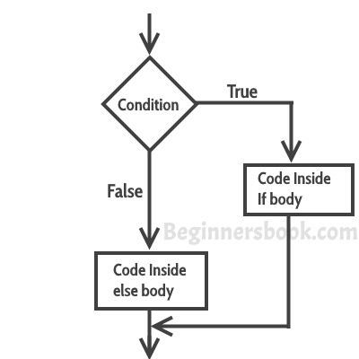

When we need to execute a set of statements based on a condition then we need to use control flow statements. For example, if a number is greater than zero then we want to print “Positive Number” but if it is less than zero then we want to print “Negative Number”. In this case we have two print statements in the program, but only one print statement executes at a time based on the input value. We will see how to write such type of conditions in the java program using control statements.
In this tutorial, we will see four types of control statements that you can use in java programs based on the requirement: In this tutorial we will cover following conditional statements:
a) if statement
b) nested if statement
c) if-else statement
d) if-else-if statement
If statement
If statement consists a condition, followed by statement or a set of statements as shown below:
if(condition){
Statement(s);
}
The statements gets executed only when the given condition is true. If the condition is false then the statements inside if statement body are completely ignored.

Example of if statement
public class IfStatementExample {
public static void main(String args[]){
int num=70;
if( num < 100 ){
/* This println statement will only execute,
* if the above condition is true
*/
System.out.println("number is less than 100");
}
}
}
Output:
number is less than 100
Nested if statement in Java
When there is an if statement inside another if statement then it is called the nested if statement.
The structure of nested if looks like this:
if(condition_1) {
Statement1(s);
if(condition_2) {
Statement2(s);
}
}
Statement1 would execute if the condition_1 is true. Statement2 would only execute if both the conditions( condition_1 and condition_2) are true.
Example of Nested if statement
public class NestedIfExample {
public static void main(String args[]){
int num=70;
if( num < 100 ){
System.out.println("number is less than 100");
if(num > 50){
System.out.println("number is greater than 50");
}
}
}
}
Output:
number is less than 100 number is greater than 50
If else statement in Java
This is how an if-else statement looks:
if(condition) {
Statement(s);
}
else {
Statement(s);
}
The statements inside “if” would execute if the condition is true, and the statements inside “else” would execute if the condition is false.

Example of if-else statement
public class IfElseExample {
public static void main(String args[]){
int num=120;
if( num < 50 ){
System.out.println("num is less than 50");
}
else {
System.out.println("num is greater than or equal 50");
}
}
}
Output:
num is greater than or equal 50
if-else-if Statement
if-else-if statement is used when we need to check multiple conditions. In this statement we have only one “if” and one “else”, however we can have multiple “else if”. It is also known as if else if ladder. This is how it looks:
if(condition_1) {
/*if condition_1 is true execute this*/
statement(s);
}
else if(condition_2) {
/* execute this if condition_1 is not met and
* condition_2 is met
*/
statement(s);
}
else if(condition_3) {
/* execute this if condition_1 & condition_2 are
* not met and condition_3 is met
*/
statement(s);
}
.
.
.
else {
/* if none of the condition is true
* then these statements gets executed
*/
statement(s);
}
Note: The most important point to note here is that in if-else-if statement, as soon as the condition is met, the corresponding set of statements get executed, rest gets ignored. If none of the condition is met then the statements inside “else” gets executed.
Example of if-else-if
public class IfElseIfExample {
public static void main(String args[]){
int num=1234;
if(num <100 && num>=1) {
System.out.println("Its a two digit number");
}
else if(num <1000 && num>=100) {
System.out.println("Its a three digit number");
}
else if(num <10000 && num>=1000) {
System.out.println("Its a four digit number");
}
else if(num <100000 && num>=10000) {
System.out.println("Its a five digit number");
}
else {
System.out.println("number is not between 1 & 99999");
}
}
}
Output:
Its a four digit number
Check out these related java examples:
Leave a Reply